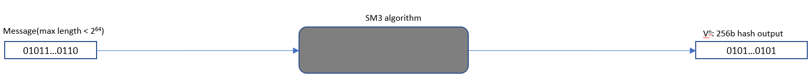
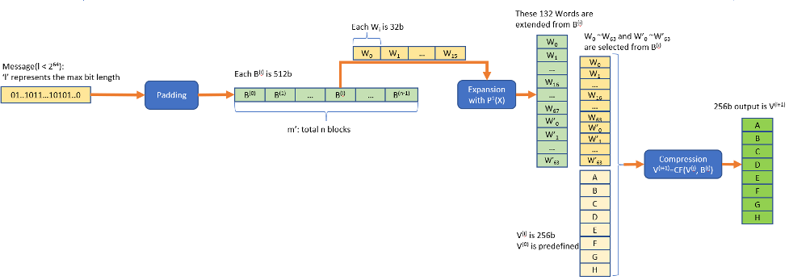
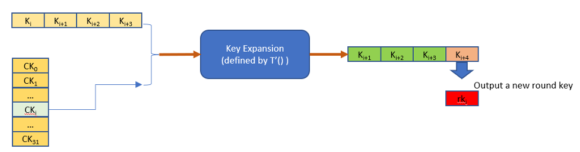
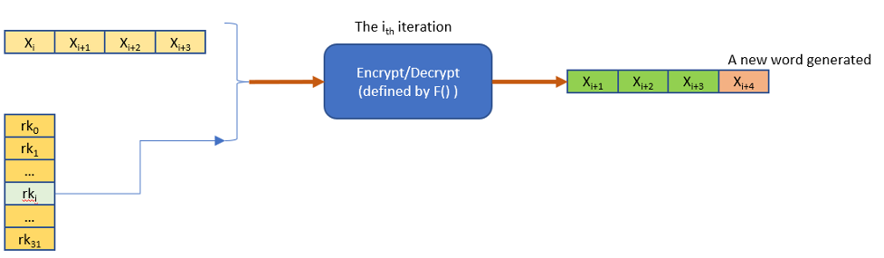
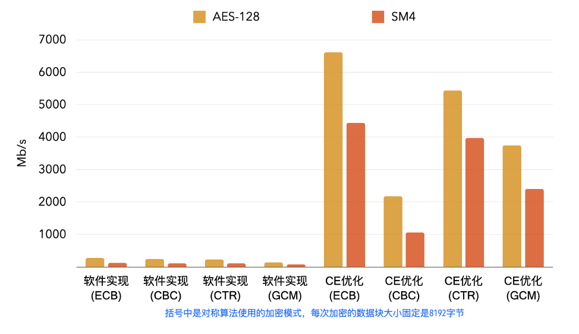

国密硬件加速与优化
性能是通用密码算法的一个重要工程指标，也是阻碍算法大规模应用的很重要一个衡量标准。
常用的密码算法经过验证后，算法本身是经久不变的，有着固定的输入输出，因此很容易作为固定的程序片断被固化到CPU或者外部集成电路上，固化到CPU上的往往表现为CPU 的扩展指令，比如x86上的AESNI指令，固化到外部集成电路上就成了支持算法加速的 PCIE 卡，比如QAT，CCP等。
国密算法的性能优化作为社区重点突破的方向，在x86和ARM架构上使用SIMD指令实现了 SM3 和 SM4 算法性能的极大突破，以 SM4 算法为例，在 x86 架构上性能提升最大达到 8 倍，在 arm64 架构上性能提升最大达到 40 倍。
基于 CPU 指令集的国密算法优化
现代CPU中SIMD指令集是标准配置，各架构的SIMD指令也是大同小异，主流的密码算法，比如哈希算法和对称加密算法都是结构化的，因此使用 SIMD 来优化通用密码算法就是很自然的一个事情，事实上也有不错的优化效果。
认为AESNI是x86架构上专用用优化 AES 算法的SIMD指令，也常被用来间接优化其它算法，相比于通用的SIMD指令，专用指令能用更少的指令和时钟周期完成更多的操作，也会带来更大的性能提升。类似的，arm64架构上也提供了专用的 Crypto Extension 扩展，为主流的对称算法和哈希算法都提供了支持，也包括SM3和SM4算法。
本小节会以armv8架构为例来介绍国密算法的指令集优化。
ARM 架构下国密算法的优化
为了提升国密算法的性能，Arm公司开发者基于Armv8.2中定义的Cryptographic Extension中的对国密SM3, SM4算法的硬件加速，实现了指令级的优化，获得了较好的性能提升。目前该优化在OpenSSL，libgcrypt和Linux内核中已经合入主线。
🟢 SM3 在 Arm 架构上的优化实现
SM3密码杂凑算法用来将一个长度为l（l < 2^64）的比特消息串进行填充和迭代压缩，生成256比特的杂凑值。SM3通常应用在数字签名和验证、消息认证码的生成与验证以及随机数的生成。具体算法参见SM3 密码杂凑算法规范。SM3算法基本过程如下图：

其中的黑盒SM3算法如下图。

第一步是将输入消息按照一定规则末尾填充一些比特，使得总比特长度为512的倍数。
第二步是对填充后的消息按512b分块，对每个数据块B(i)按32b的字长分为16个字作为初始输入，依照P1(X)函数定义操作进行52次迭代扩展分别得到第16到67个字，然后使用0~67个字经过异或后生成最后的64个字的输出。
第三步是以每个B(i)块在第二步生成的128个字(去掉其中的64~67) 和 256b的向量V(i)作为输入进行64轮的迭代，生成一个新的 256b的V(i+1)作为下一次循环的输入向量。直到最后一个B块完成处理后得到的最后一个256b向量为SM3的最终hash 值。
Arm SM3指令
Arm SM3指令是Armv8.2引入的七条基于ASIMD的加密扩展指令，支持对SM3 hash算法的硬件加速。
消息扩展的处理由SM3PARTW1和SM3PARTW2配合完成，实现了P1(X)和简单的位移，异或操作。一次指令配对执行将并发生成4个扩展字。对于一个B(i)块的扩展需要循环13次。
数据压缩 CF(V(i), B(i))需要64次循环完成，每次循环中的压缩处理由余下5条指令完成。
SM3SS1一次对3个字的数据完成压缩函数中的SS1运算，输出一个字作为后续其它压缩处理的输入。
SM3TT1A完成前16次循环所定义的TT1运算，而SM3TT1B完成后面48次循环所定义的TT1运算，输出的数据作为下一轮TT1运算的输入。每次执行完成对多个输入的字数据的并行处理。
SM3TT2A完成前16次循环中所定义的的TT2运算和准备下一轮TT2运算的输入数据，而SM3TT2B完成后面48次循环中定义的TT2运算。
可见SM3的压缩处理因为存在依赖而无法一次循环运算而完成多个256b的向量V(i)的输出。
SM3 优化效果
以下是在阿里云倚天710上的benchmark数据，SM3与SHA256哈希算法的软件实现（无优化）与Cryptographic Extension指令集优化后的性能对比：
SM3 优化总结
具体在OpenSSL中对SM3算法的优化参见OpenSSL SM3 优化实现。从上面的描述可见，相关的指令都是借助了ASIMD中的128b vector寄存器，一次执行处理多个数据字，从而获得较好的并发度。其中压缩处理因为循环之间存在数据依赖，没法如同消息扩展的处理达到一次完成多个输出字的效果。
🟢 SM4 在 Arm 架构上的优化实现
SM4密码算法是一个分组算法。该算法的输入分组长度为128比特, 密钥长度为128比特。每次加解密都可以输出128比特。数据解密和数据加密的算法相同, 但解密轮密钥是加密轮密钥的逆序。
SM4算法主要分成两步，首先是每次密钥扩展会产生一个新的32b的轮密钥，迭代32次后会得到32个新的轮密钥用于后续的加解密处理。

对128b的分组数据进行加解密是使用上一步扩展出来的32个轮密钥rki进行32轮迭代，最后4轮迭代输出的4个字(128比特)就是密文或解压后的明文。下图是表示一次迭代的处理。

SM4算法中每次迭代的具体描述可以参看SM4分组加密算法规范。
Arm SM4指令
FEAT_SM4优化引入的两条可选加密扩展指令，同样是基于ASIMD技术来提升处理的并行度。其中指令SM4EKEY一次执行能扩展出来4个新的轮密钥，8次执行后就完成了所有32个轮密钥的生成。指令SM4E具有类似的并行度，每次执行能加解密出来4个字的数据，同样的8次执行后就能完成一个分组的加解密。
SM4 优化效果
以下是在阿里云倚天710上的benchmark数据，SM4与AES对称加密算法的软件实现（无优化）与Cryptographic Extension指令集优化后的性能对比：

SM4 优化总结
具体在OpenSSL中对SM4算法的优化补丁参见OpenSSL SM4优化实现。基于上面的描述，优化的主要有：
- 借助SM4指令的SIMD属性一次执行完成多个字数据的处理。
- 每个SM4指令一次执行能并行完成4个期待的输出，减少了循环次数。
- 对于可以并行的分组加密模式，比如SM4-CTR, SM4-ECB等，可以对4个分组进行SM4计算，充分地利用流水线，让计算可以并行进行。
除此之外，Arm公司开发者还进一步提升了SM4-GCM的性能。考虑到FEAT-SM4是可选的架构特性，在某些SoC中不一定支持，Arm公司开发者基于Neon指令实现了Armv8下的SM4，从而在没有FEAT-SM4的设备上也能获得相当的提升。
从性能上来说SM4指令的使用可以大幅地提升性能。从安全性来说，硬件指令集成了S盒替换的功能，使得这部分计算变成了时间一致的操作，大大减小了侧信道攻击的可能性，保证了算法的安全。
密码加速器 - 海光密码技术（HCT）
简介
海光密码技术HCT（Hygon Cryptographic Technology）是基于海光芯片密码协处理器以及密码指令集特性，自主设计研发的一套密码算法加速软件开发套件。
官方发布的 HCT 密码计算套件位于 gitee 的 hygon-devkit 仓库，地址：https://gitee.com/anolis/hygon-devkit.git
git clone https://gitee.com/anolis/hygon-devkit.git
HCT密码计算套件的目录结构示意图如下：
hygon-devkit/
├─ hct
├──pkg
│ ├── hct_x.x.x.xxxxxxxx_alpha
│ └── hct_x.x.x.xxxxxxxx_release
├── readme
├── sample
└── script
- pkg目录：内含各版本hct密码计算套件（上述示意图中的x.x.x.xxxxxxxx代表版本信息）。
- sample目录：内含使用hct密码套件的示例程序代码。
- script目录：内含一些工具脚本。
- readme文件：有关HCT的简单情况及使用说明。
测试与开发
环境配置
安装支持HCT的内核，参考安装开源OS镜像并编译软件页面进行内核的编译与安装。完成内核安装后，重启系统，选择刚才安装的内核启动。
按如下流程必要的模块跟依赖：
# 1. 检测并安装必须的内核模块
modprobe vfio vfio-pci vfio_iommu_type1 mdev vfio_mdev
# 2. 安装需要依赖的软件库
# numa 库
yum install numactl -y
# openssl 库
wget https://www.openssl.org/source/old/1.1.1/openssl-1.1.1c.tar.gz
tar –zxvf openssl-1.1.1c.tar.gz
cd openssl-1.1.1c
./config
make
sudo make install
# Tips：HCT套件中的部分工具脚本需要用到uuidgen工具，安装方式如下。
yum install util-linux -y
# 3. 安装HCT开发套件
cd hct/pkg/hct_1.0.0.20230224_rc
./config
sudo make install
测试
-
功能测试
cd /opt/hygon/hct/bin/hct/test ./hct_test -
性能测试
cd /opt/hygon/hct/bin ./hct_speed -elapsed -engine hct –multi 128 –seconds 60 sm2enc ./hct_speed -elapsed -engine hct –multi 128 –seconds 60 sm2sign ./hct_speed -elapsed -engine hct –multi 128 –seconds 60 –bytes 1024 -evp sm3 ./hct_speed -elapsed -engine hct –multi 128 –seconds 60 –bytes 1024 -evp sm4
hctconfig 服务命令
HCT套件成功安装后，会在系统中增加一个hctconfig服务命令。通过hctconfig服务可以方便的管理CCP协处理器的绑定情况：
- 使用默认配置，将 CCP 协处理器绑定至最佳性能状态：
service hctconfig start - 利用status参数查看HCT的相关状态信息及CCP协处理的绑定情况：
service hctconfig status - 利用rebond命令对CCP协处理器进行重新绑定：
service hctconfig rebond
Tips：start命令和rebond的命令都可以带参数，详情可参考 usage 命令：service hctconfig usage
开发
HCT通过 openssl 标准接口（EVP）向应用提供接口，使用HCT套件时，通过e=ENGINE_by_id（"hct"）选择密码引擎为hct，然后直接通过openssl标准（EVP）接口即可完成对hct密码计算套件的调用。
卸载HCT套件
在对应HCT版本包内执行make uninstall即可卸载HCT套件
hct/pkg/hct_1.0.0.20230224_rc
make uninstall
其它注意事项
如果BIOS支持，可以将PSP CCP配置给C86使用，BIOS设置步骤如下：
- 进入BIOS，选择“HYGON CBS”，进入“Moksha Common Options”
- 在“Available PSP CCP VQ Count”中输入4
说明：海光CPU芯片中包含两类CCP协处理器，一类为PSP CCP，一类为NTB CCP，通常BIOS只会将NTB CCP配置给用户使用，PSP CCP一般用于可信计算场景。如果BIOS支持将PSP CCP配置给用户（C86）使用，那么HCT就可以获得更多的协处理器资源，表现出更高的性能。
hct的正确执行依赖内核的iommu功能，所以需要使能内核的iommu功能
hygon CPU上启动内核的命令行参数参考如下：
amd_iommu=on iommu=pt